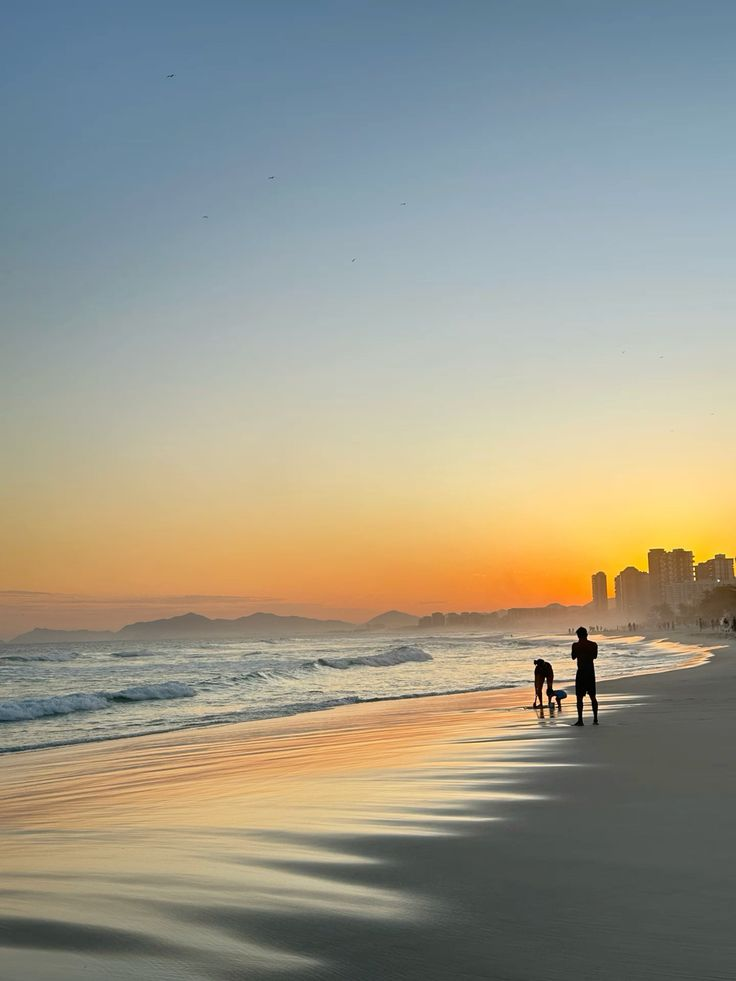
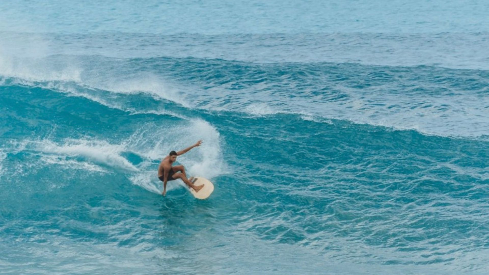

Descubra a praia ideal para o seu dia
A Praia da Barra da Tijuca é a mais extensa do Rio, com quilômetros de faixa de areia contínua. Essa característica define completamente sua dinâmica: é uma praia espaçosa, com diferentes ritmos ao longo da orla, permitindo tanto áreas movimentadas quanto trechos mais tranquilos.

Por ser tão longa, a Barra apresenta variações claras de ocupação. Alguns pontos concentram mais movimento e vida social, como o Posto 2 (região do Pepê), o Posto 4 (Barra Mares), o Posto 5 e o Posto 8. Já para quem busca um ambiente mais tranquilo, os trechos próximos ao Posto 6 e entre os postos 3 e 4 costumam ser mais vazios e silenciosos.
